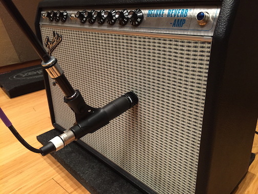

Shure 57
Micrófono dinámico de instrumento de directividad cardioide que ofrece una reproducción limpia de los instrumentos amplificados y acústicos. Dispone de una respuesta en frecuencia modelada para conseguir una reproducción vocal de gran riqueza, reducción del ruido de fondo y sistema antigolpes neumático.
- Respuesta en frecuencia modelada para conseguir una limpia reproducción instrumental y una toma de voz de gran riqueza.
- Patrón cardioide uniforme que aísla la fuente de sonido a la vez que reduce el ruido de fondo.
- Sistema antigolpes neumático que elimina el ruido de manejo del micro.
- Muy resistente, hasta en las peores condiciones.
- Respuesta en frecuencia: 40 a 15.000 Hz
